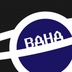
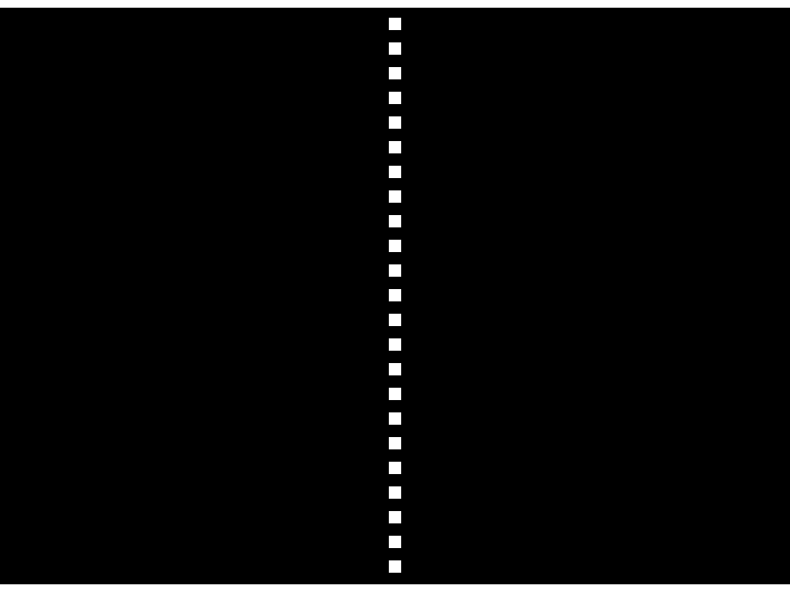

astyr.net

Adam Kimball | Baha
B.S. Computer Science, Clarkson University, 2016
Software Engineer
- IBM - Staff Cloud Infrastructure Engineer (2020 - Present)
- IBM - Linux Development Engineer (2016 - 2020)
- Siege Technologies - Software Engineer Internship (2016)
- C Speed LLC - Software Engineer Co-Op (2015)
Favorite Personal Projects
BookBot
- BookBot is a Discord chatbot written in Python 3, utilizing
- the discord.py API wrapper. It has a litany of features
- ranging from managing Minecraft servers, to running a truly
- random dice roller hooked up to a quantum field sensor API.
- Check it out on GitHub!
WebGL Tennis
- 
- WebGL Tennis is an version of the classic Tennis game
- implemented in raw WebGL and JavaScript. It works in all
- modern browsers, including mobile, but requires a kebyoard
- with WASD and cursor keys to play.
- Check it out on GitHub,
or play it Right here on astyr.net!